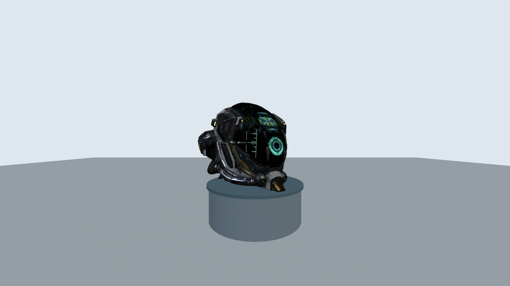
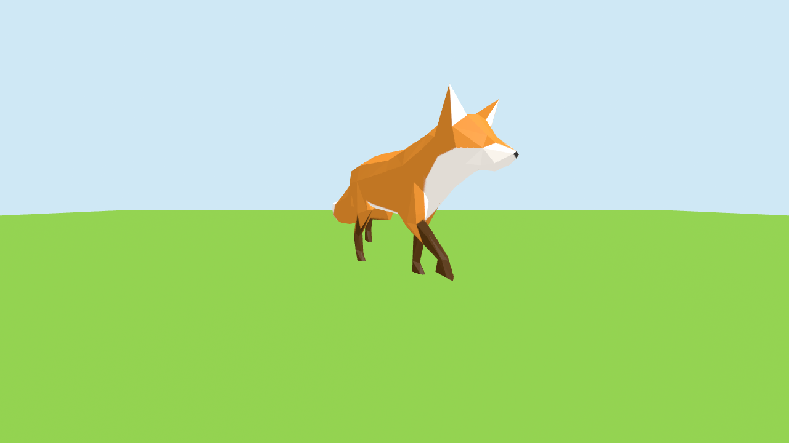

glTFファイルの読み込みと3Dモデルの配置
この回は 「Sketchfab のアニメーション付き3Dモデルを、自分の世界の中で動かす」 という1つのクリエイティブ課題に集中します。
コード体験で animation-mixer の使い方を体験し、標準課題で自分で選んだモデルのアニメーションを再生する作品に仕上げてください。発展課題では内蔵アニメと移動アニメを組み合わせてキャラクターを歩かせます。
これまでの演習では <a-box> や <a-sphere> などのプリミティブ（基本図形）で3D空間を構築してきました。
今回は、外部の3Dモデルファイルを読み込んで、よりリアルなシーンを作る方法を学びます。

<a-entity gltf-model="..."> で A-Frame 空間の台座に配置したもの。プリミティブでは作れない、写実的な質感と細部が一気に手に入ります ── これが「3Dアセットを活用する」ということです。| 形式 | 拡張子 | 特徴 | Web向き |
|---|---|---|---|
| glTF / GLB | .gltf / .glb | Webの標準3D形式。軽量で高速に読み込める。テクスチャ・アニメーション対応。 | 最適 |
| OBJ | .obj + .mtl | 古くからある形式。シンプルだがアニメーション非対応。 | 可 |
| FBX | .fbx | ゲーム開発で広く使われる。ファイルサイズが大きい。 | 不向き |
| USDZ | .usdz | Apple AR 向け。ブラウザでの直接利用は限定的。 | 不向き |
なぜ glTF を使うのか？
glTF（Graphics Language Transmission Format）は、Khronos Group が策定したWeb向け3Dの標準フォーマットです。「3DのJPEG」とも呼ばれ、ブラウザで高速に読み込めるよう設計されています。A-Frame、Three.js、Babylon.js など主要なWebGL フレームワークすべてが対応しています。
glTF には2つのバリエーションがあります。
| 形式 | 構成 | 特徴 |
|---|---|---|
| .gltf（テキスト版） | .gltf（JSON）+ .bin（バイナリ）+ テクスチャ画像 | 複数ファイルに分かれる。中身を読んで編集しやすい。 |
| .glb（バイナリ版） | すべてを1つのファイルにまとめたもの | ファイルが1つだけで管理が簡単。転送も速い。 |
この授業では、管理が簡単な .glb 形式 を主に使います。
glTF は「GL Transmission Format」の略で、Khronos Group という団体が策定した3Dデータの標準フォーマットです。一番のポイントは、.gltf ファイルの正体が ただの JSON テキストだということです。皆さんが普段 API のやり取りで見ている JSON と、まったく同じ形をしています。
下は、赤い箱（Cube）を1つ置いただけの最小の glTF を簡略化したものです（// の行は説明用のコメントで、実際の JSON には含まれません）。
JSON ── 赤い箱1つの glTF（簡略版） { // このファイル自体の情報（バージョンや作成ソフト） "asset": { "version": "2.0", "generator": "Blender 4.0" }, // ① シーン：表示する node 番号のリスト "scene": 0, "scenes": [ { "nodes": [ 0 ] } ], // ② node：「位置・回転・大きさ」と、表示する mesh 番号 "nodes": [ { "name": "Cube", "mesh": 0, "translation": [ 0, 1, 0 ] } ], // ③ mesh：形そのもの。どの頂点データと material を使うか "meshes": [ { "name": "Cube", "primitives": [ { "attributes": { "POSITION": 0, "NORMAL": 1, "TEXCOORD_0": 2 }, "indices": 3, "material": 0 } ] } ], // ④ material：色や質感（PBR）。ここでは赤色 "materials": [ { "name": "Red", "pbrMetallicRoughness": { "baseColorFactor": [ 0.8, 0.1, 0.1, 1.0 ], "metallicFactor": 0.0, "roughnessFactor": 0.5 } } ], // ⑤ accessor / bufferView / buffer：頂点の数値データの場所を示す "accessors": [ /* POSITION, NORMAL, UV, indices の4つ … */ ], "bufferViews": [ /* バイナリのどこからどこまで使うか … */ ], "buffers": [ { "uri": "cube.bin", "byteLength": 840 } ] }
このように glTF は、役割ごとに分かれた配列（リスト）の集まりです。そして各要素は、お互いを「番号（インデックス）」で参照し合うのが最大の特徴です。たとえば上の例では node が "mesh": 0 と書くことで「meshes 配列の0番目を使う」と指しています。
| キー | 役割 | 具体例（上のファイルでは） |
|---|---|---|
scenes / scene | 表示する一番外側の入れ物。どの node を出すか | node[0]（Cube）を表示 |
nodes | シーン内の「もの」。位置・回転・拡大率を持つ。階層（親子）も作れる | 位置 (0, 1, 0) に mesh[0] を置く |
meshes | 実際の形（頂点の集まり）。どの material を使うかも指定 | Cube の形 + material[0] |
materials | 色・金属感・ざらつきなどの質感（PBR） | 赤色（baseColor = 0.8,0.1,0.1） |
textures / images | 表面に貼る画像（今回の例では未使用） | ― |
accessors | 頂点座標などの数値を「どう読むか」（型・個数） | POSITION / NORMAL / UV / indices |
bufferViews / buffers | 頂点の生データ本体（バイナリ .bin）の場所 | cube.bin（840バイト） |
座標やUVといった大量の数値は、JSON に直接書くと巨大になるため、別ファイル（.bin）にバイナリでまとめて保存します。JSON 側の accessors／bufferViews は「その bin ファイルの何バイト目から、float が何個並んでいるか」という地図の役割だけを持ちます。.glb は、この JSON と bin と画像を 1つのファイルに連結したものです。
🖐 やってみよう（2分）
無料の3Dモデル（.gltf）をダウンロードし、テキストエディタで開いてみよう。"meshes" や "materials" がJSONで書かれていることを自分の目で確認できます。公式サンプルビューアで見た目とデータを見比べるのもおすすめ。
<img src="photo.jpg"> で表示するのと同じように、A-Frame では gltf-model 属性で3Dモデルを読み込めます。
A-Frame で glTF モデルを読み込むには2つの方法があります。
方法1: 直接指定（シンプル）
HTML <a-entity gltf-model="url(model.glb)" position="0 0 -3"></a-entity>
方法2: a-assets でプリロード（推奨）
HTML <a-scene> <!-- アセットを事前に読み込む --> <a-assets> <a-asset-item id="myModel" src="model.glb"></a-asset-item> </a-assets> <!-- idで参照する --> <a-entity gltf-model="#myModel" position="0 0 -3"></a-entity> </a-scene>
| 方法 | メリット | デメリット |
|---|---|---|
| 直接指定 | コードが短い | 表示中にモデルが「ポンッ」と出現する |
| a-assets プリロード | すべてのアセットを先に読み込んでから表示。スムーズ。 | コードが少し長くなる |
🖐 やってみよう（1分）
直接指定（方法1）と a-assets プリロード（方法2）の両方でモデルを読み込み、ページ表示時の挙動の違いを観察してみよう。
<a-assets> は画像、音声、動画、3Dモデルなどのメディアファイルを事前にまとめて読み込むための仕組みです。複数のモデルを使うシーンではプリロードを推奨します。
3Dモデルは読み込んだだけでは期待通りの大きさ・向きにならないことが多いです。以下の3つの属性で調整します。
| 属性 | 書き方 | 説明 |
|---|---|---|
| position | position="x y z" | モデルの位置（x: 左右、y: 上下、z: 手前奥） |
| rotation | rotation="x y z" | モデルの回転角度（度数法）。例: y=180 で反対向き |
| scale | scale="x y z" | モデルの拡大縮小。"1 1 1" が原寸。"2 2 2" で2倍。 |
HTML <!-- モデルを少し上に移動し、2倍に拡大し、180度回転 --> <a-entity gltf-model="#myModel" position="0 1 -5" rotation="0 180 0" scale="2 2 2"></a-entity>
よくある問題: モデルが巨大すぎる → scale="0.01 0.01 0.01" で小さくする。モデルが地面に埋まる → position の y を上げる。モデルが後ろ向き → rotation の y を調整する。
🖐 やってみよう（1分）
scale を "1 3 1"（Y軸だけ3倍）に変えてモデルの形がどう変わるか確認してみよう。
内蔵アニメーションを再生するには、aframe-extras というアドオンに含まれる animation-mixer コンポーネントを使います。手順は2つだけです。
手順1: アドオンを読み込む（<head> に1行追加）
HTML <!-- A-Frame 本体の下に追加する --> <script src="https://cdn.jsdelivr.net/gh/c-frame/aframe-extras@7.5.4/dist/aframe-extras.min.js"></script>
手順2: モデルに animation-mixer を付ける
HTML <!-- モデルに含まれる全アニメーションを再生 --> <a-entity gltf-model="#cat" animation-mixer></a-entity> <!-- 「Walk」という名前のアニメだけをループ再生したいとき --> <a-entity gltf-model="#cat" animation-mixer="clip: Walk"></a-entity>
これだけでモデルが動き出します。animation-mixer の主なオプションは次のとおりです。
| プロパティ | 意味 | 例 |
|---|---|---|
clip | 再生するアニメ名。省略すると全アニメ再生 | clip: Walk |
loop | 繰り返し方（repeat=ずっと / once=1回 / pingpong=往復） | loop: repeat |
timeScale | 再生速度（1=標準、2=2倍速、0.5=スロー） | timeScale: 0.5 |
Walk, Run, Idle, Armature|Take 001 など）。まずは animation-mixer だけ（clip指定なし）で動かし、Sketchfab のモデルページの「Animations」欄や、ダウンロードした .gltf 内の "animations" 配列で名前を確認しましょう。
インターネット上には、無料で使える3Dモデルが多数公開されています。glTF / GLB 形式でダウンロードできるサイトを紹介します。
| サイト名 | URL | 特徴 |
|---|---|---|
| Sketchfab | sketchfab.com | 最大手の3Dモデル共有サイト。glTF ダウンロード可。フィルタで「Downloadable」を選択。 |
| poly.pizza | poly.pizza | 軽量なローポリモデルが豊富。GLB 形式で即ダウンロード。 |
| Kenney.nl | kenney.nl/assets | ゲーム向けのシンプルなアセットパック。CC0 ライセンス（自由利用可）。 |
ライセンスに注意
ダウンロードする際は、そのモデルのライセンスを確認してください。「CC BY」（クレジット表記が必要）、「CC0」（自由利用可）などがあります。授業の課題として使う場合は、ダウンロード元のURLをNotionに記録してください。
| 項目 | 推奨 | 注意点 |
|---|---|---|
| ポリゴン数 | 1モデルあたり 10,000 以下 | ポリゴン数が多いほどリアルだが重い。「ローポリ」モデルがWeb向き。 |
| ファイルサイズ | 1モデルあたり 5MB 以下 | テクスチャ画像が大きいとファイルサイズが膨らむ。 |
| シーン全体 | 合計 50,000 ポリゴン以下 | モバイルデバイスではさらに少なく抑える。 |
| テクスチャ | 1024x1024 px 以下 | 大きなテクスチャはGPUメモリを消費する。 |
確認方法: A-Frameのシーンで Ctrl+Alt+I（またはアドレスバーの末尾に ?stats を追加）で統計情報を表示できます。draw calls や triangles の数値を確認しましょう。
| 圧縮技術 | 対象 | 圧縮率 | 備考 |
|---|---|---|---|
| Draco | 頂点・法線・UV | 5〜10倍 | Googleが開発。glTF 拡張 KHR_draco_mesh_compression |
| Meshopt | 頂点・インデックス | 3〜5倍 | 軽量・高速。GPU 解凍向き |
| KTX2 / Basis | テクスチャ | 4〜8倍 | GPU で直接読める圧縮テクスチャ |
📖 キーワード
| glTF | Graphics Language Transmission Format。Khronos Group が策定したWeb向け3D標準フォーマット。「3DのJPEG」と呼ばれる。 |
| GLB | glTF のバイナリ版。JSON + バイナリ + テクスチャを1ファイルにまとめた形式。管理と転送が簡単。 |
| a-assets（プリロード） | シーンの描画前にメディアファイルをまとめて読み込む仕組み。同一アセットの重複ダウンロードを防ぎ、表示のちらつきを抑える。 |
| ポリゴン数 | 3Dモデルを構成する三角形の数。多いほどリアルだがブラウザの負荷が増す。Web向けは1万以下が推奨。 |
🔊 読み方ガイド
3D アセット用語の読み方を一覧にしました。作品づくりやモデル探しのときに正しく読めるよう確認しておきましょう。
| 用語 | 読み方 | 意味 |
|---|---|---|
| glTF | ジーエルティーエフ（gee-el-tee-eff） | Web向け3D標準フォーマット |
| GLB | ジーエルビー（gee-el-bee） | glTF のバイナリ単一ファイル版 |
| FBX | エフビーエックス（eff-bee-ex） | Autodesk の3D交換フォーマット |
| OBJ | オービージェー／オブジェ | 古典的なテキスト3Dフォーマット |
| USDZ | ユーエスディーゼット | Apple AR 用フォーマット |
| asset | アセット（ásset） | 素材ファイル（モデル・音声・画像など） |
| skinning | スキニング | 頂点とボーンの結合（変形のしくみ） |
| bone | ボーン（骨） | キャラの骨格を構成する1本 |
| Draco | ドラコ | Google製の3D圧縮ライブラリ |
| PBR | ピービーアール | Physically Based Rendering（物理ベース描画） |
💡 具体例で理解する 3D アセット
| 概念 | 身近な例 | 3Dでの対応 |
|---|---|---|
| asset | 料理の食材（肉・野菜・調味料） | モデル・テクスチャ・音声・アニメ |
| glTF/GLB | レシピを1つの PDF にまとめる | JSON・バイナリ・画像を1ファイルに |
| Mesh | 紙工作の外形（折り紙のかたち） | 三角形の集合で表す3Dの表面 |
| Bone | 骨と関節（人体の骨格） | 変形の中心になる1本の棒 |
| Skinning | 皮膚が骨に貼り付いて動く | 頂点が Bone の動きに追従 |
| Material | 絵具・テクスチャ・質感 | 色・光沢・凹凸を決める設定 |
| Draco 圧縮 | ZIPで写真を圧縮して送る | 頂点データを8倍小さく転送 |
| プリロード | 料理の下ごしらえを先に済ます | 表示前にモデルを全部読み込む |
❓ よくある質問（Q&A）
Q1. glTF と GLB はどちらを使えばいいですか？
A. 基本は GLB でOK。1ファイルにまとまるため管理・配信が楽。デバッグ中に中身を編集したいときだけ .gltf を選ぶ。
Q2. ダウンロードしたモデルが大きすぎてブラウザが固まります。
A. ポリゴン数とテクスチャ解像度を疑う。?stats で triangles > 5万 なら要削減。Blender で「Decimate」モディファイアをかけるか、Draco 圧縮版を出力する。
Q3. モデルが真っ黒で表示されます。
A. 光源（<a-light>）が無い可能性が高い。type="ambient"（環境光）と type="directional"（指向性光）を最低1つずつ配置する。
Q4. FBX ファイルを使いたい！
A. A-Frame / Three.js は FBX を直接サポートしていない。Blender で読み込み → glTF/GLB に変換して使う。
Q5. 同じモデルを100個並べると遅くなりますか？
A. はい。draw call が100回になる。instanced rendering（Three.js の InstancedMesh）を使えば draw call を 1 回にまとめられる。A-Frame では aframe-instancing コンポーネントが有名。
この回は 「Sketchfab のアニメーション付き3Dモデルを、自分の世界の中で動かす」 という1つのクリエイティブ課題に挑戦します。
まずはここで、課題に必要なたった1つの新しい技 ── animation-mixer でモデルの内蔵アニメーションを再生する ── を、実際に手を動かして体験しましょう。ここで作る index.html が、課題作品の土台になります。
S:\Web_Prog の中に Web08 フォルダを作成するS:\Web_Prog\Web08 を開くindex.htmlWeb08 フォルダに index.html を作成し、以下のコードを貼り付けてください。ここでは、歩行アニメーションを内蔵した有名なサンプルモデル「Fox（キツネ）」を読み込んで歩かせます。
index.html と入力して EnterHTML ── index.html <!DOCTYPE html> <html lang="ja"> <head> <meta charset="UTF-8"> <title>アニメーション付きモデル</title> <!-- ① A-Frame 本体 --> <script src="https://aframe.io/releases/1.7.1/aframe.min.js"></script> <!-- ② アニメ再生アドオン（animation-mixer が使えるようになる） --> <script src="https://cdn.jsdelivr.net/gh/c-frame/aframe-extras@7.5.4/dist/aframe-extras.min.js"></script> </head> <body> <a-scene> <!-- アニメ付きモデルをプリロード --> <a-assets> <a-asset-item id="fox" src="https://cdn.jsdelivr.net/gh/KhronosGroup/glTF-Sample-Models/2.0/Fox/glTF-Binary/Fox.glb"></a-asset-item> </a-assets> <!-- ★ animation-mixer="clip: Walk" で「歩く」アニメを再生 --> <a-entity gltf-model="#fox" animation-mixer="clip: Walk" position="0 0 -5" scale="0.035 0.035 0.035"></a-entity> <!-- 草地・空・光 --> <a-plane rotation="-90 0 0" width="60" height="60" color="#7CB342"></a-plane> <a-sky color="#CFE8F5"></a-sky> <a-light type="ambient" intensity="0.8"></a-light> <a-light type="directional" position="3 6 4" intensity="0.9"></a-light> </a-scene> </body> </html>
実行手順:

animation-mixer="clip: Walk" によって、キツネに内蔵された「歩く」アニメーションが再生され、四肢が交互に動く。animation-mixer を外すと、同じモデルでもピタッと止まったままになる ── これが「内蔵アニメーションを再生する」ということ。🖐 やってみよう（2分）
Fox モデルには Survey（見回す）・Walk（歩く）・Run（走る）の3つのアニメーションが入っています。animation-mixer="clip: Walk" の Walk を Run に書き換えて保存し、動きがどう変わるか観察しよう。さらに animation-mixer だけにして clip を消すとどうなる？
VS Code で Web08 フォルダに original.html を新規作成し、Sketchfab からダウンロードした「アニメーション付き」の3Dモデルを主役にした、あなただけの小さな世界を作ってください。
テーマは自由です（例: 「歩く恐竜のいる原始時代」「羽ばたく鳥のいる森」「踊るキャラクターのステージ」「泳ぐ魚の水族館」など）。
この回はこの1課題に集中します。コード体験で動かした animation-mixer を使って、自分で選んだモデルのアニメーションを再生するのがゴールです。
必須要件
.gltf＋.bin＋テクスチャ、または .glb が入っている）Web08 フォルダに置き、<a-assets> でプリロードするanimation-mixer を付けて、内蔵アニメーションを再生する（これが必須）position / scale / rotation でモデルの大きさ・向き・位置を整える<a-light>）を置いてモデルが見えるようにするanimation-mixer を clip 指定なしで書くと、モデルに入っているすべてのアニメが再生されます。まずは animation-mixer だけで動かし、Sketchfab のモデルページの「Animations」欄でクリップ名を確認してから clip: 名前 で絞り込みましょう。
提出要件
| 提出物 | 内容 |
|---|---|
| 1. コード | original.html のコード全体をNotionノートに貼り付ける |
| 2. モデルの入手元 | 使った Sketchfab モデルのページURLとライセンス（CC BY / CC0 など）を記録する |
| 3. 作品の説明 | どんなテーマの世界を作ったか、何のアニメが再生されるかを2〜3文で書く |
下はサンプルとして Fox モデルを使った「最小の世界」です。src を自分がダウンロードしたモデルのファイル名（例: scene.gltf や cat.glb）に差し替え、世界を足していってください。
<!DOCTYPE html> <html lang="ja"> <head> <meta charset="UTF-8"> <script src="https://aframe.io/releases/1.7.1/aframe.min.js"></script> <!-- animation-mixer を使うためのアドオン --> <script src="https://cdn.jsdelivr.net/gh/c-frame/aframe-extras@7.5.4/dist/aframe-extras.min.js"></script> </head> <body> <a-scene> <a-assets> <!-- ↓ ここを自分のモデルに差し替える --> <a-asset-item id="hero" src="scene.gltf"></a-asset-item> </a-assets> <!-- 主役: animation-mixer でアニメ再生（clipを消すと全アニメ再生） --> <a-entity gltf-model="#hero" animation-mixer position="0 0 -5" scale="1 1 1"></a-entity> <!-- 世界づくり: プリミティブを3つ以上 --> <a-cylinder position="-2 0.5 -4" radius="0.3" height="1" color="#8D6E63"></a-cylinder> <a-sphere position="-2 1.4 -4" radius="0.7" color="#66BB6A"></a-sphere> <a-box position="2 0.5 -4" color="#90A4AE"></a-box> <a-plane rotation="-90 0 0" width="60" height="60" color="#7CB342"></a-plane> <a-sky color="#CFE8F5"></a-sky> <a-light type="ambient" intensity="0.8"></a-light> <a-light type="directional" position="3 6 4" intensity="0.9"></a-light> </a-scene> </body> </html>
モデルが巨大／極小のときは scale を "0.01 0.01 0.01" ～ "10 10 10" の範囲で調整。地面に埋まる／浮くときは position の y を上下に動かして合わせます。
標準課題の original.html を発展させます。モデルの内蔵アニメ（足を動かす）と、A-Frame の animation 機能による位置の移動を組み合わせて、キャラクターが実際に歩いて移動するように見せてください。
animation-mixer（内蔵アニメ）＝ その場で足を交互に動かす（歩く「フリ」）。これだけだとその場で足踏み。animation（移動）＝ エンティティ全体をposition で移動させる。これだけだと棒立ちのまま滑って移動。必須要件
animation-mixer で歩く／走るアニメを再生させる（標準課題のまま）animation 属性を追加し、position を移動させるloop: true でずっと動き続けるようにするrotation で調整。後ろ向きに進んでいたら 180度回す）dir: alternate で往復させ、折り返しで rotation も反転させて「向きを変えて歩く」を表現する内蔵の Walk を再生しつつ、animation で x 座標を -4 → 4 に動かして横切らせます。Fox で試せます（自分のモデルに差し替え可）。
<!-- ① 内蔵アニメ: 足を動かす（その場の歩行モーション）
② animation: position の x を -4→4 へ8秒かけて移動、往復ループ
③ rotation の y=90 で「進行方向（右）」に正面を向ける -->
<a-entity gltf-model="#fox"
animation-mixer="clip: Walk"
position="-4 0 -5"
rotation="0 90 0"
scale="0.03 0.03 0.03"
animation="property: position;
to: 4 0 -5;
dur: 8000;
dir: alternate;
loop: true;
easing: linear"></a-entity>
もっと自然にするなら： 折り返したときにキツネが「後ろ歩き」に見えてしまいます。これを直すには、rotation も animation__turn のように2つ目の animation で 0 90 0 ↔ 0 -90 0 に切り替えると、端で向きを変えてから歩き出すように見えます（A-Frame は animation__名前 で複数のアニメを1つのエンティティに付けられます）。
提出要件
| 提出物 | 内容 |
|---|---|
| 1. コード | original.html（発展版）のコード全体をNotionノートに貼り付ける |
| 2. 説明 | animation-mixer（内蔵アニメ）と animation（移動）がそれぞれ何を担当しているか、2つを組み合わせた結果どう見えるかを3〜4文で書く |
各セクションを埋めていってください。これが提出するPDFの元になります。
Notion テンプレート
# Webプログラミング演習 第8回
名前:
学籍番号:
---
## コード体験（練習メモ・提出対象外）: アニメ付きモデルを動かす（index.html）
### やってみよう（clip を Walk → Run に変えたときの動きの違い）
（1文で書く）
---
## 【提出1】標準課題: Sketchfab のアニメ付きモデルを自分の世界に登場させる
### ① コード（original.html 全体）
```html
（ここに貼り付け）
```
### ② 使用したモデルの入手元
- Sketchfab ページURL:
- ライセンス（CC BY / CC0 など）:
- 再生したアニメ名（clip）:
### ③ 作品の説明（2〜3文）
- どんなテーマの世界を作ったか（例: 歩く恐竜の原始時代 / 羽ばたく鳥の森 / 踊るキャラのステージ など）:
- 何のアニメが再生されるか:
---
## 【提出2】発展課題: 内蔵アニメ × A-Frameアニメ（歩いて移動するキャラ）
### ① コード（original.html 発展版 全体）
```html
（ここに貼り付け）
```
### ② 説明（3〜4文）
- animation-mixer（内蔵アニメ）が担当していること:
- A-Frame の animation（移動）が担当していること:
- 2つを組み合わせた結果、どう見えるか:
標準課題・発展課題は自由制作のため、決まった正解はありません。ここでは、必須要件をすべて満たした参考作例を公開します。これをそのまま動かして仕組みを確認し、自分の作品づくりの出発点にしてください。
clip: Walk（歩く）→ clip: Run（走る）に変えると、四肢の動きが速く・大きくなり、走っているモーションになる。animation-mixer だけ（clip なし）にすると、Fox の全アニメ（Survey→Walk→Run）が順番に再生される。animation-mixer 自体を消すと、モデルは完全に静止する（A-Frame は内蔵アニメを自動再生しないため）。Fox を主役に、プリミティブで「森」を作った最小作例です。src を自分の Sketchfab モデルに差し替えれば、そのまま自分の作品になります。
<!DOCTYPE html>
<html lang="ja">
<head>
<meta charset="UTF-8">
<script src="https://aframe.io/releases/1.7.1/aframe.min.js"></script>
<script src="https://cdn.jsdelivr.net/gh/c-frame/aframe-extras@7.5.4/dist/aframe-extras.min.js"></script>
</head>
<body>
<a-scene>
<a-assets>
<a-asset-item id="hero"
src="https://cdn.jsdelivr.net/gh/KhronosGroup/glTF-Sample-Models/2.0/Fox/glTF-Binary/Fox.glb"></a-asset-item>
</a-assets>
<!-- 主役: 歩くアニメを再生 -->
<a-entity gltf-model="#hero" animation-mixer="clip: Walk"
position="0 0 -5" scale="0.035 0.035 0.035"></a-entity>
<!-- 世界づくり: 木（幹＋葉）と岩 -->
<a-cylinder position="-3 0.8 -6" radius="0.3" height="1.6" color="#8D6E63"></a-cylinder>
<a-sphere position="-3 2.0 -6" radius="1" color="#66BB6A"></a-sphere>
<a-cylinder position="3 0.6 -6" radius="0.25" height="1.2" color="#8D6E63"></a-cylinder>
<a-sphere position="3 1.6 -6" radius="0.8" color="#43A047"></a-sphere>
<a-box position="1.5 0.3 -3" depth="1.2" width="1.2" height="0.6" color="#9E9E9E"></a-box>
<a-plane rotation="-90 0 0" width="60" height="60" color="#7CB342"></a-plane>
<a-sky color="#CFE8F5"></a-sky>
<a-light type="ambient" intensity="0.8"></a-light>
<a-light type="directional" position="3 6 4" intensity="0.9"></a-light>
</a-scene>
</body>
</html>
標準課題の主役エンティティを、下のように書き換えるだけです。内蔵の Walk と、animation による position 移動を同時にかけています。
<!-- 足を動かしながら（animation-mixer）、左右に往復移動（animation）-->
<a-entity gltf-model="#hero"
animation-mixer="clip: Walk"
position="-4 0 -5"
rotation="0 90 0"
scale="0.03 0.03 0.03"
animation="property: position; to: 4 0 -5;
dur: 8000; dir: alternate;
loop: true; easing: linear"></a-entity>
position の x を −4→4 へ動かし、エンティティ全体を移動させる担当。これだけだと棒立ちのまま滑る。dir: alternate で端まで行くと折り返す。